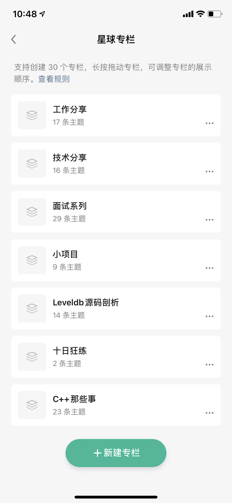

重磅项目¶
HOT: 新增项目¶
线程池¶
这个项目的线程池是基于Apache Arrow项目的衍生版本。我们将Arrow项目中复杂的核心结构——线程池——完全剥离出来，形成了这个独立的项目。由于原始的线程池与Arrow项目本身的工具有深度依赖关系，因此我们在这个项目中对线程池进行了一些深度移除和改造，以保持与原始Arrow线程池的基础功能一致。一些改动包括：
- 将Arrow的Future替换为std::future
- 将Arrow的Result替换为std::optional
- 重构了Submit接口，使用promise进行实现
通过这些改动，我们的目标是：
- 使线程池更方便地作为其他项目的依赖库使用
- 提供简单的方式来引入本项目的so库和头文件，以使用线程池功能
此外，这个项目还可以作为深入学习线程池设计与实现的资源。我们欢迎您探索并使用这个经过精心改进的线程池。
https://github.com/Light-City/light-thread-pool
内存池¶
这个项目的内存池是基于Apache Arrow项目的衍生版本。我们将Arrow项目中复杂的核心结构——内存池——完全剥离出来，形成了这个独立的项目。由于原始的内存池与Arrow项目本身的工具有深度依赖关系，因此我们在这个项目中对内存池进行了一些深度移除和改造，以保持与原始Arrow内存池的基础功能一致。一些改动包括：
- 分离allocator与memory_pool
- 移除不需要的LoggingMemoryPool、ProxyMemoryPool
- 移除jemalloc等第三方malloc库，未来可以支持
通过这些改动，我们的目标是：
- 使代码更加精简
- 使内存池更方便地作为其他项目的依赖库使用 提供简单的方式来引入本项目的so库和头文件，以使用内存池功能 此外，这个项目还可以作为深入学习内存池设计与实现的资源。我们欢迎您探索并使用这个经过精心改进的内存池。
https://github.com/Light-City/light-memory-pool
1.手把手100行写一个简易版Mutex¶
1.1 内容¶
项目名称：简易互斥锁（SimpleMutex）
项目描述：简易互斥锁（SimpleMutex）是一个基于原子变量和信号量的互斥锁实现，用于保护并管理多线程环境下的共享资源访问。它提供了一种简单而有效的方式来确保在多线程并发访问时，只有一个线程可以同时访问受保护的资源，从而避免数据竞争和不一致性。基于 POSIX 标准的信号量库实现，包含 Catch2 单元测试，附带了基于 Catch2 框架的单元测试，用于验证互斥锁的正确性和稳定性，使用bazel编译，google编码规范。
1.2 涉及内容¶
其中涉及C++知识（RAII、信号量、lock_guard、线程安全编程），还能学习以下内容：
1.Bazel构建系统：了解如何使用Bazel来管理和构建C++项目。Bazel是一种高效、可扩展的构建工具，可用于管理复杂的项目结构、依赖关系和构建流程。
2.Catch2测试框架：掌握如何使用Catch2来编写单元测试。Catch2是一个功能强大且易于使用的C++测试框架，可以帮助你编写清晰、可读性高的测试用例，提高代码质量和可靠性。
3.原子操作：了解原子操作的概念和使用方法。原子操作是一种并发编程技术，可以确保对共享变量的操作是不可中断的，避免了竞态条件和数据不一致的问题。
4.fetch_add函数：学习如何使用fetch_add函数进行原子的加法操作。fetch_add是一种原子操作函数，它可以在并发环境中安全地对共享变量进行原子加法操作，避免了数据竞争。
5.内存序：了解不同的内存序（memory order）对多线程程序的影响。
6.锁的自动管理：引入lock_guard类，实现锁的自动获取和释放。lock_guard是C++标准库提供的一种锁管理工具，它在构造函数中获取锁，在析构函数中释放锁，确保在任何情况下都能正确释放锁，避免因为异常或早期返回等情况导致锁没有释放的问题。
7.RAII（Resource Acquisition Is Initialization）原则：了解如何使用对象的生命周期来管理资源的获取和释放，确保资源的正确获取和释放，避免资源泄漏。
2.七种方式玩转condition_variable¶
2.1 内容¶
1.CPU轮询等待版单生产者单消费者：
该版本使用了简单的轮询机制，生产者不断地检查消费者是否已经消费完数据。这种模式简单直接，但效率较低，因为生产者在没有数据时仍然在忙等待。
2.等待通知版单生产者单消费者：
该版本引入了等待通知机制，生产者在没有数据时会等待消费者的通知。这种模式避免了忙等待，提高了效率，同时减少了资源消耗。
3.等待通知版单生产者多消费者：
在这个版本中，引入了多个消费者，它们共享生产者的数据。生产者在产生数据后，通知所有消费者进行处理。
4.等待通知版多生产者多消费者：
这个版本支持多个生产者和多个消费者，生产者之间和消费者之间共享数据。生产者在产生数据后，通知所有消费者进行处理。
5.单生产者多消费者并行版：
在这个版本中，引入了并行处理机制，多个消费者可以同时处理数据。生产者产生数据后，多个消费者并行处理，提高了整体处理速度。
6.多生产者多消费者并行版：
这个版本支持多个生产者和多个消费者，并且允许并行处理。多个生产者并行产生数据，多个消费者并行处理数据，提高了整体并发能力。
7.支持Lambda回调的优雅停止版：
在这个版本中，引入了Lambda回调函数，用于优雅地停止并发处理。可以通过调用回调函数来停止生产者和消费者的处理，并进行清理工作。
2.2 涉及内容¶
1.多线程和并发编程：通过这些版本的描述，您可以了解到如何在C++中使用多线程和并发编程来处理并行任务。您将学习如何创建线程、控制线程的执行、线程间的数据共享和同步等。
2.同步机制：在这些版本中，介绍了不同的同步机制，如轮询等待、等待通知和回调函数。您将学习如何使用互斥锁、条件变量、信号量等来实现线程间的同步和协调。
3.Lambda表达式：在支持Lambda回调的版本中，您将学习如何使用C++11引入的Lambda表达式来编写简洁而灵活的回调函数，以实现优雅的停止机制。
4.代码组织和构建工具：提到了支持bazel编译的能力，这可以让您学习如何使用构建工具来组织和管理复杂的C++项目。
5.condition_variable、mutex、unique_lock
3.duckdb + levledb¶
leveldb 源码剖析已更毕
duckdb 持续更新
4.C++那些事十日狂练升级版¶
还差2日可更完
5.学习方式¶
-
如果想学习以上内容，可扫码加入知识星球或添加个人wx: gcxzhang，备注: 星球
-
学习，也提供学习指导，求职建议等咨询~
